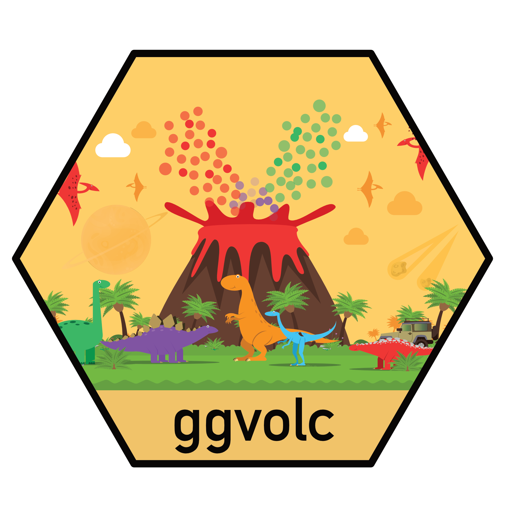
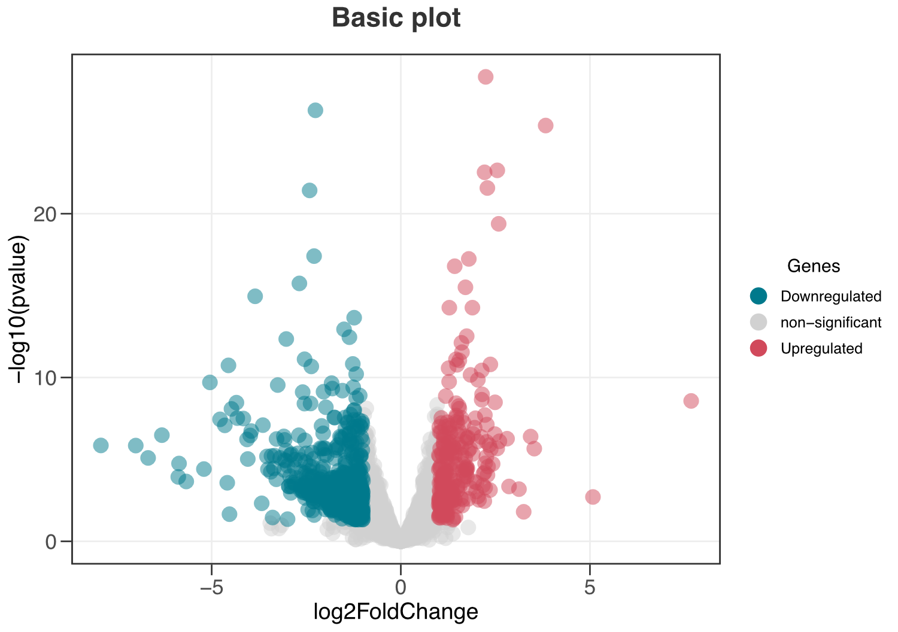
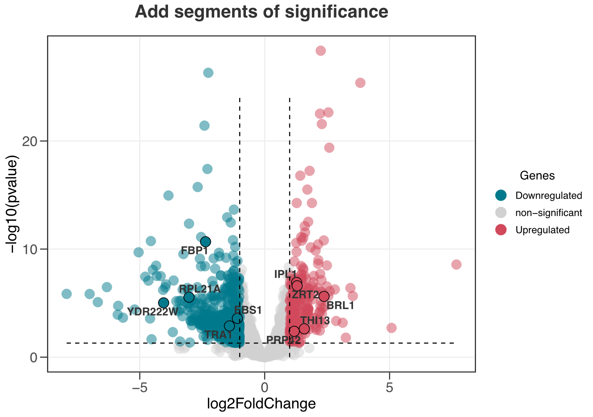
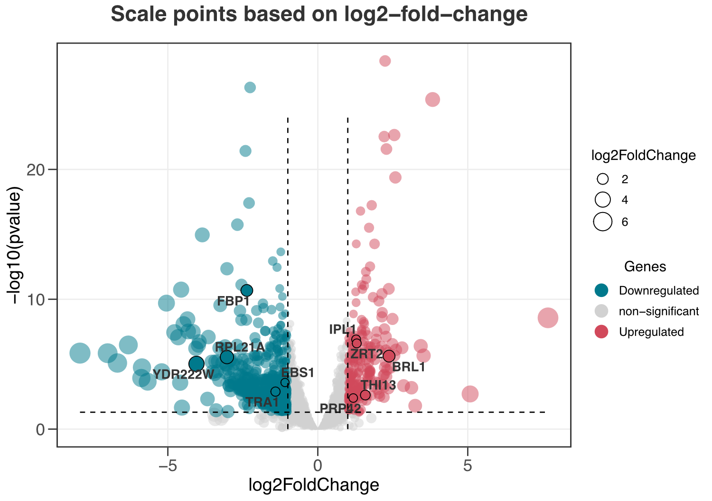
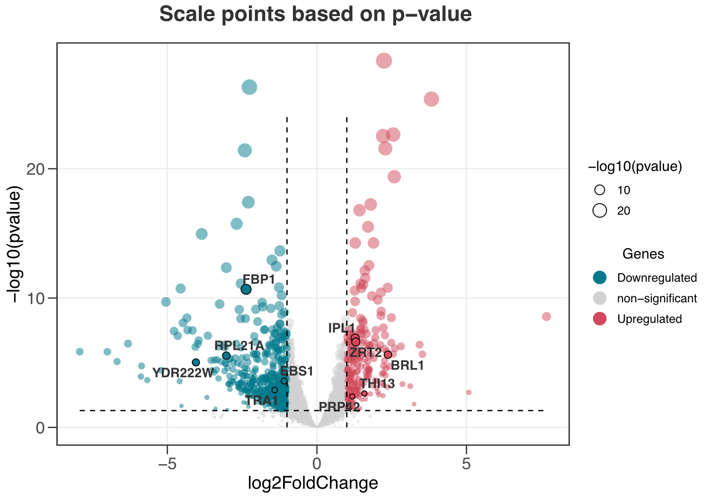
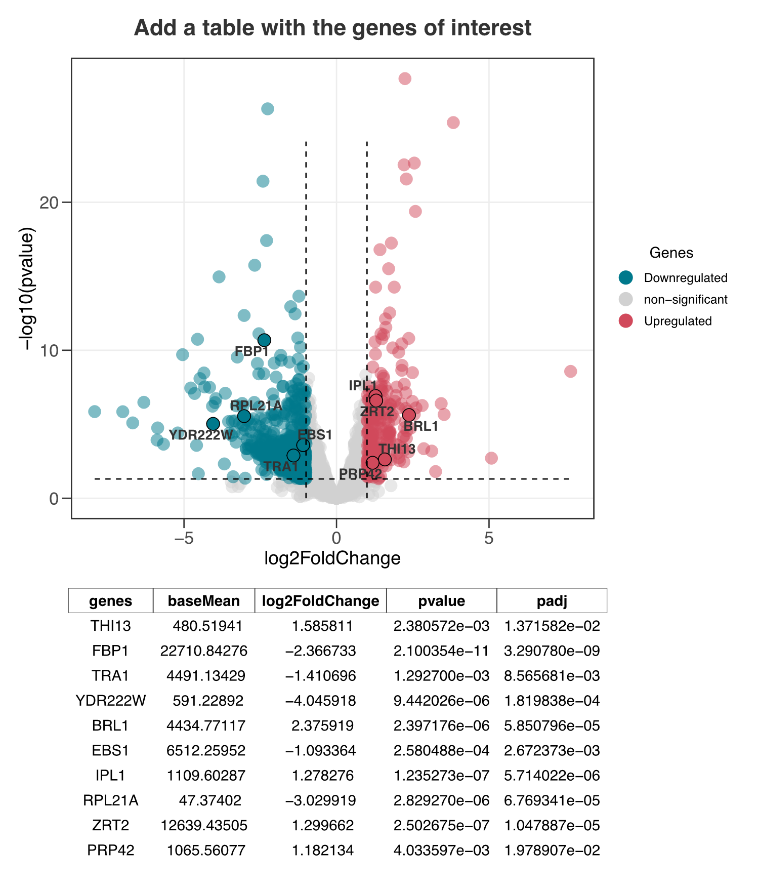

Install the ggvolc package
Install the package using the following commands

# for now, you can install the developmental version of ltc
# first you need to install the devtools package
# in case you have not already installed
install.packages("devtools")
# and load it
library(devtools)
# then you can install the dev version of the ltc
devtools::install_github("loukesio/ggvolc")
# and load it
library(ggvolc)How do I start?
Load the library and explore the example datasets!
library(ggvolc)
#> Welcome to ggvolc version 0.2.0 !
#>
#> 888
#> 888
#> 888
#> .d88b. .d88b. 888 888 .d88b. 888 .d8888b
#> d88P"88b d88P"88b 888 888 d88""88b 888 d88P"
#> 888 888 888 888 Y88 88P 888 888 888 888
#> Y88b 888 Y88b 888 Y8bd8P Y88..88P 888 Y88b.
#> "Y88888 "Y88888 Y88P "Y88P" 888 "Y8888P
#> 888 888
#> Y8b d88P Y8b d88P
#> "Y88P" "Y88P"
#>data(all_genes) # data.frame that contains the output of differentially expressed genes
head(all_genes,5) # have a look at the first 5 rows
#> genes baseMean log2FoldChange lfcSE stat pvalue
#> 1 GCR1 7201.5782 2.244064 0.2004959 11.192564 4.434241e-29
#> 2 OPI10 1009.4171 -2.257454 0.2096469 -10.767889 4.880607e-27
#> 3 AGA2 249.1173 3.829474 0.3623263 10.569132 4.143136e-26
#> 4 FIM1_1376 5237.5035 2.550409 0.2560379 9.961059 2.256459e-23
#> 5 HMG1 10838.1037 2.214300 0.2229065 9.933763 2.968371e-23
#> padj
#> 1 2.153711e-25
#> 2 1.185255e-23
#> 3 6.707736e-23
#> 4 2.739905e-20
#> 5 2.883475e-20
data(attention_genes) # here is a data.frame with genes that I want to mention to the volcano plot
head(attention_genes,5) # have a look at the first five rows
#> genes baseMean log2FoldChange lfcSE stat pvalue
#> 1 THI13 480.5194 1.585811 0.5219706 3.038122 2.380572e-03
#> 2 FBP1 22710.8428 -2.366733 0.3533032 -6.698871 2.100354e-11
#> 3 TRA1 4491.1343 -1.410696 0.4384316 -3.217595 1.292700e-03
#> 4 YDR222W 591.2289 -4.045918 0.9133881 -4.429572 9.442026e-06
#> 5 BRL1 4434.7712 2.375919 0.5037264 4.716686 2.397176e-06
#> padj
#> 1 1.371582e-02
#> 2 3.290780e-09
#> 3 8.565681e-03
#> 4 1.819838e-04
#> 5 5.850796e-05Created on 2023-08-11 with reprex v2.0.2
1. Plot a simple volcano plot!
Install the package using the following commands
ggvolc(all_genes)
3. Add segments to indicate areas of significance.
ggvolc(all_genes, attention_genes, add_seg = TRUE) +
labs(title="Add segments of significance")
4. Indicate the size of point based on the log2FoldChange column.
ggvolc(all_genes, attention_genes, size_var = "log2FoldChange", add_seg = TRUE)
5. Indicate the size of the point based on the pvalue.
ggvolc(all_genes, attention_genes, size_var = "pvalue", add_seg = TRUE)
6. Add a table with the genes of interest.
plot <- ggvolc(all_genes, attention_genes, add_seg = TRUE) +
labs(title="Add a table with the genes of interest")
plot %>%
genes_table(attention_genes)
The gene table is rendered with gt and composed with patchwork, so the result is a single object you can style further or save with ggplot2::ggsave().
7. Works with DESeq2, edgeR, and limma out of the box
ggvolc() and genes_table() accept the output of all three major differential-expression pipelines directly — column names are auto-detected and mapped internally, so no manual renaming is needed. Gene identifiers held in row names (as edgeR/limma often do) are promoted to a genes column automatically.
| Pipeline | Fold change | p-value | adjusted p | expression |
|---|---|---|---|---|
DESeq2 (results()) |
log2FoldChange |
pvalue |
padj |
baseMean |
edgeR (topTags()) |
logFC |
PValue |
FDR |
logCPM |
limma (topTable()) |
logFC |
P.Value |
adj.P.Val |
AveExpr |
# edgeR: pass topTags()$table straight in
edger_res <- as.data.frame(edgeR::topTags(qlf, n = Inf))
ggvolc(edger_res)
# highlight the top hits and add a gt table
top <- head(edger_res[order(edger_res$PValue), ], 8)
ggvolc(edger_res, top, add_seg = TRUE) %>%
genes_table(top)8. Significance on the adjusted p-value (FDR) — the default
ggvolc() calls significance on the adjusted p-value (FDR) by default — the right cutoff for most DE workflows — and the y-axis and the significance line follow along, so the plot stays consistent. Prefer the raw p-value? Set sig_col = "pvalue".
ggvolc(all_genes, add_seg = TRUE) # FDR (padj) by default
ggvolc(all_genes, sig_col = "pvalue", add_seg = TRUE) # raw p-valueIf your table has no adjusted-p column, ggvolc automatically falls back to the raw p-value.
ggvolc() is also robust to p-values of exactly 0 (which DESeq2/edgeR can emit for the strongest genes): instead of silently dropping them, their -log10 value is capped so they stay pinned near the top of the plot.
9. Automatically label the top genes
No need to build a separate data frame — label_top highlights and labels the N most significant genes for you, and label_dir lets you pick the direction.
# top 10 overall
ggvolc(all_genes, label_top = 10, add_seg = TRUE, title = "Top 10 hits")
# top 12 upregulated only
ggvolc(all_genes, label_top = 12, label_dir = "up")
# top 20 downregulated only
ggvolc(all_genes, label_top = 20, label_dir = "down")
# top 10 of each direction (up to 20 labels)
ggvolc(all_genes, label_top = 10, label_dir = "each")label_dir accepts "both" (default), "up", "down", or "each".